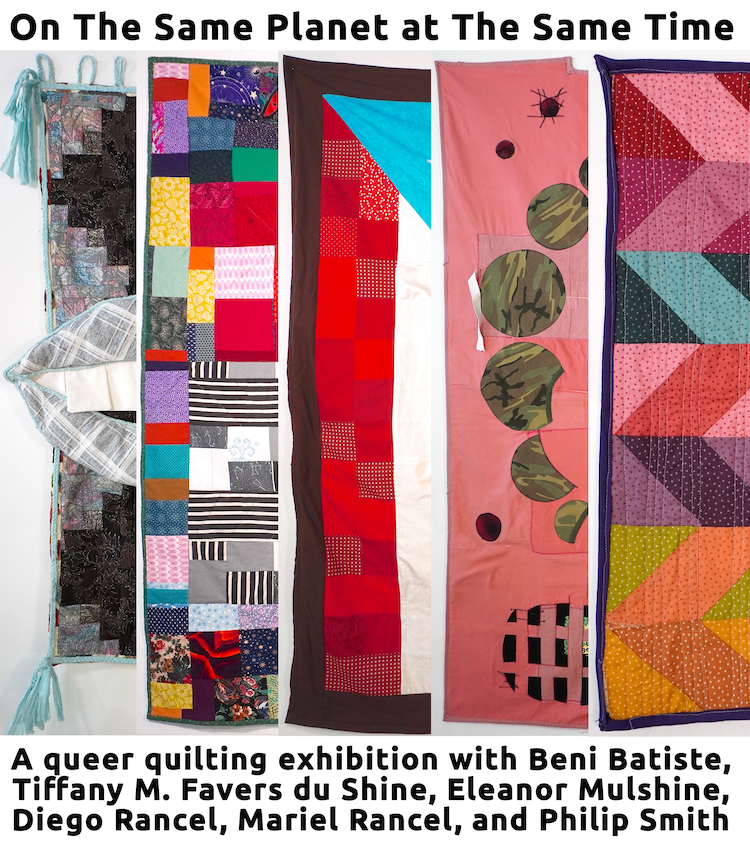

On The Same Planet at The Same Time
On the Same Planet at the Same Time: a queer quilting exhibition with Beni Batiste, Tiffany M. Favers du Shine, Eleanor Mulshine, Diego Rancel, Mariel Rancel, and Philip Smith
Taking up space, being bold, coming home, being cozy, knowing family, knowing yourself, convening for shared pursuits, showing up again and again, and imagining with your hands: These themes come from the space we have been building together and are expressed through these five quilts. The six artists in this exhibition are deep in the fold of queer quilting, a workshop series taught by curator Eliza Fernand in their Rogers Park studio that turned three this past fall.
Each quilt has roots in this studio, this shared stash of fabric that we keep culling from and donating to, and each artist has learned from one another as they cut and stitched and pieced their patchworks together. The title of this show comes from a passage in Rebecca Makkai’s novel The Great Believers, “You two are on the planet at the same time. You’re in the same place now. That’s a miracle.” Acknowledging everyday miracles is a potent act in our present time, fraught with power structures that seek to erase and oppress us. The practice of gathering to craft in unison builds connections and resilience as we show up at the same place, at the same time. Every one of these quilts are a miracle.
On view 24/7 from Feb 8th to April 6th in the windows of The Beautiful Cat Gallery at 1070 W. Granville Ave in Edgewater
Opening Reception February 13th, 6-9pm at the back room of Pete’s Pizza, across the street at 1100 W. Granville Ave